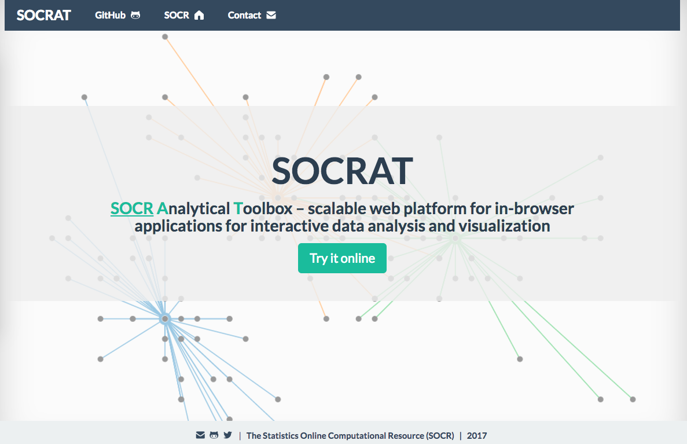

SOCRAT
Skills:
JavaScript, HTML, CSS, D3.js
SOCRAT is a Dynamic Web Toolbox for Interactive Data Processing, Analysis, and Visualization. I contributed on the "Charts". I implemented bar graph, scatter plot, histogram, bubble chart, and pie chart.